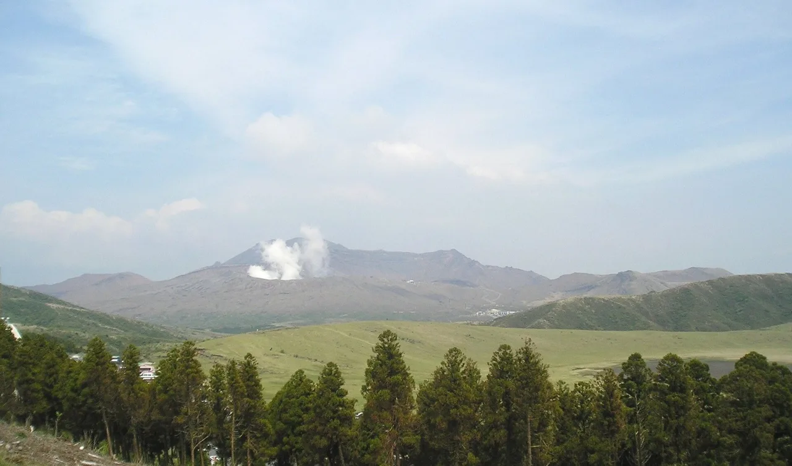

Patung-patung One Piece di Kumamoto: menemukan semua 10 Straw Hat
Tersebar di seluruh Prefektur Kumamoto berdiri sepuluh patung perunggu Bajak Laut Topi Jerami — Luffy di depan kantor prefektur, Chopper di kebun binatang, Usopp di luar Stasiun Aso. Mereka ada karena dua fakta: pencipta One Piece, Eiichirō Oda, berasal dari Kumamoto, dan pada April 2016 prefektur ini dilanda gempa bumi yang dahsyat. Patung-patung ini adalah bagian dari ONE PIECE Kumamoto Revival Project — kru "dikirim" ke kota-kota yang paling terdampak untuk menarik kembali para pengunjung. Panduan ini mencantumkan lokasi setiap patung, menceritakan kisah di balik proyek ini, dan menyusun rute yang realistis — beserta bahasa Jepang yang akan kamu gunakan.

Mengapa Straw Hat ada di Kumamoto
Eiichirō Oda lahir dan besar di Kumamoto, dan setelah gempa bumi April 2016 — yang menewaskan puluhan orang, meruntuhkan rumah-rumah di seluruh prefektur, dan merusak parah Kumamoto Castle — ia bersama penerbit mendukung kampanye pemulihan dengan semangat bahwa kru Topi Jerami akan membantu membangun kembali. Warisan paling nyata dari kampanye ini adalah ONE PIECE Kumamoto Revival Project: sepuluh patung perunggu anggota kru, yang diresmikan satu per satu antara 2018 dan 2022, masing-masing ditempatkan di kota atau desa yang terdampak gempa.
Penempatan patung-patung ini bukan sembarangan — setiap karakter dipasangkan dengan lokasi secara bermakna: navigator Nami, yang menguasai angin dan cuaca, ditempatkan di sebuah desa yang turbin anginnya di atas bukit hancur akibat gempa; dokter Chopper di kebun binatang yang harus mengevakuasi hewan-hewannya; arkeolog Robin di museum peringatan gempa di atas garis patahan; ahli kapal Franky di samping jalur kereta yang butuh bertahun-tahun untuk dibuka kembali. Mengunjungi mereka berarti mengunjungi proses pemulihan itu sendiri — dan itulah tujuannya. Ini adalah pola yang sama seperti got karakter dan ziarah anime di Jepang, namun dengan kisah latar yang sangat mengharukan.
Semua 10 lokasi patung
Kru, kota-kotanya, dan kapan setiap patung diresmikan. Semuanya berada di luar ruangan dan gratis; hanya patung Robin yang berada di area museum, jadi cek jam buka situs tersebut terlebih dahulu.
| Karakter | Lokasi | Diresmikan | Catatan |
|---|---|---|---|
| Luffyルフィ | Promenade Kantor Prefektur Kumamoto, Kumamoto City | Nov 2018 | Patung pertama — sang kapten berdiri di ibu kota |
| Sanjiサンジ | Mashiki | Dec 2019 | Sang koki, di salah satu kota yang paling dekat dengan episentrum gempa |
| Usoppウソップ | Di depan Stasiun Aso, Aso | Dec 2019 | Mudah digabungkan dengan kunjungan ke kaldera Aso |
| Chopperチョッパー | Kebun Binatang dan Botani Kumamoto City (gerbang utama) | Nov 2020 | Sang dokter menjaga pintu masuk kebun binatang |
| Brookブルック | Mifune | Nov 2020 | Sang musisi — Mifune juga dikenal dengan fosil dinosaurusnya |
| Frankyフランキー | Di samping Stasiun Takamori, Takamori (Minamiaso Railway) | Nov 2020 | Sang ahli kapal, di samping jalur kereta yang dibangun kembali setelah gempa |
| Namiナミ | Nishihara | Jul 2021 | Sang navigator — turbin angin Nishihara yang rusak akibat gempa sesuai dengan kemampuannya mengendalikan angin dan cuaca |
| Robinロビン | Minamiaso | Oct 2021 | Sang arkeolog, dekat dengan garis patahan dan situs warisan di selatan kaldera |
| Zoroゾロ | Ōzu | Jan 2022 | Sang pendekar pedang — Ōzu dikenal dengan tradisi kendō-nya, yang dōjō-nya rusak akibat gempa |
| Jinbeジンベエ | Taman Sumiyoshi Kaigan, Uto | Jul 2022 | Sang juru kemudi menghadap laut di pesisir Ariake — penutup dari seluruh rangkaian patung |
Patung-patung ini adalah monumen publik permanen, sehingga tidak seperti kolaborasi got karakter, mereka tidak akan berpindah — namun rute bus, ketersediaan mobil sewaan, dan fasilitas di sekitarnya bisa berubah. Situs proyek resmi (op-kumamoto.com) memiliki detail akses terkini untuk setiap patung.
ONE PIECE Kumamoto Revival Project mengelola situs resmi berbahasa Inggris dengan peta, catatan akses, dan kisah di balik setiap patung. Gunakan untuk merencanakan perjalanan; kembali ke sini untuk logika rute dan bahasa Jepangnya.
Rute yang realistis
Sepuluh patung di sembilan kota terdengar seperti perburuan harta karun, dan memang begitu — namun geografinya terbagi menjadi tiga kluster:
- Kumamoto City (jalan kaki / trem): Luffy di kantor prefektur dan Chopper di kebun binatang keduanya bisa dijangkau dengan trem kota dan berjalan kaki. Gabungkan dengan Kumamoto Castle — yang sendirinya merupakan kisah pemulihan pasca gempa yang luar biasa di kawasan ini.
- Putaran kaldera Aso (mobil atau kereta): Usopp (Stasiun Aso), Franky (Stasiun Takamori), Robin (Minamiaso), dan Nami (Nishihara) mengelilingi gunung berapi. Mobil sewaan bisa menyelesaikan putaran ini dengan nyaman dalam sehari sambil menikmati pemandangan kaldera sepanjang jalan; jalur JR Hōhi dan Minamiaso Railway melayani Usopp dan Franky jika kamu tidak menggunakan mobil.
- Busur selatan (mobil): Sanji (Mashiki), Brook (Mifune), Zoro (Ōzu) berada di timur kota dan bisa digabungkan dengan baik; Jinbe (Uto) menghadap laut di barat daya — penutup alami saat matahari terbenam.
Dua hari penuh dengan mobil sewaan cukup untuk mengumpulkan semua sepuluh tanpa terburu-buru. Satu hari memungkinkan kamu mengunjungi pasangan kota plus salah satu dari putaran Aso atau busur selatan.
- Pemberhentian pedesaan memang benar-benar pedesaan. Beberapa patung berada di kota kecil dengan bus yang jarang — cek jadwal atau sewa mobil.
- Peringatan vulkanik mempengaruhi Aso. Area kawah ditutup saat aktivitas meningkat; patung-patung tetap bisa diakses, namun rencana ke puncak harus tetap fleksibel.
- Kota-kota ini mengalami langsung bencana tersebut. Patung-patung ini menghormati pemulihan nyata — perlakukan situs peringatan di sekitarnya dengan rasa hormat yang semestinya.
Beberapa tautan di atas adalah tautan afiliasi. Kami mungkin mendapatkan komisi tanpa biaya tambahan bagimu. Kami hanya mencantumkan layanan yang kami gunakan sendiri.
Bahasa Jepang yang sebenarnya akan kamu gunakan
Kumamoto pedesaan adalah tempat di mana sedikit bahasa Jepang sangat bermanfaat — pengemudi bus dan meja wisata akan dengan senang hati menunjukkan arah ke patung jika kamu bisa menyebutkan namanya:
| Bahasa Jepang | Cara baca | Arti |
|---|---|---|
| ワンピース | Wan Pīsu | One Piece — seri manga/anime-nya |
| 麦わらの一味 | mugiwara no ichimi | kru Topi Jerami — nama kolektif patung-patung ini |
| 銅像 | dōzō | patung perunggu — ルフィの銅像はどこですか sangat tepat digunakan |
| 復興 | fukkō | pemulihan / rekonstruksi — kata kunci proyek ini |
| 地震 | jishin | gempa bumi |
| 熊本弁 | Kumamoto-ben | dialek lokal — kamu akan mendengarnya, dan warga setempat senang kamu tahu kata ini |
| 阿蘇 | Aso | gunung berapi dan kaldera di jantung rute ini |
| レンタカー | rentakā | mobil sewaan — cara realistis untuk mengumpulkan semua sepuluh patung |
Ingin kosakata ini lebih mudah diingat? Kuis pertempuran JLPT gratis melatih kosakata perjalanan dan budaya seperti ini dengan pengulangan berjarak.
Mau merchandise-nya, bukan hanya patungnya?
Barang-barang One Piece — termasuk merchandise eksklusif patung Kumamoto — seringkali tidak pernah keluar dari Jepang. Jika kamu mengoleksi dari luar negeri, layanan proxy buying bisa mengirimkannya ke seluruh dunia.
Lihat perbandingan jujur kami: cara membeli dari Jepang dengan Buyee vs ZenMarket →
Atau langsung ke ZenMarket (proxy buying, kirim ke seluruh dunia) →
Perburuan patung ini bisa dirangkai dengan permainan pengumpulan berbasis lokasi lainnya di Jepang: ziarah anime →, got karakter →, Pokéfuta → (Kumamoto punya miliknya sendiri), dan stempel michi-no-eki → selama berkendara. Panduan Kumamoto kami mencakup sisa prefektur ini.
Pertanyaan umum
T. Mengapa ada patung One Piece di Kumamoto?
J. Pencipta Eiichirō Oda berasal dari Kumamoto, dan setelah gempa bumi April 2016, ONE PIECE Kumamoto Revival Project menempatkan sepuluh patung perunggu kru Topi Jerami di kota-kota dan desa-desa yang terdampak parah untuk mendukung pemulihan melalui pariwisata. Patung-patung ini diresmikan antara 2018 dan 2022.
T. Di mana patung Luffy berada?
J. Di promenade di depan Kantor Prefektur Kumamoto di Kumamoto City — patung pertama, diresmikan pada November 2018. Bisa dijangkau dengan trem kota ditambah berjalan kaki sebentar.
T. Ada berapa patung One Piece di Kumamoto?
J. Sepuluh — satu untuk setiap anggota kru Topi Jerami: Luffy, Zoro, Nami, Usopp, Sanji, Chopper, Robin, Franky, Brook, dan Jinbe, tersebar di sembilan kota.
T. Bisakah saya melihat semua patung dalam satu hari?
J. Cukup ketat. Pasangan kota (Luffy, Chopper) mudah, namun sisanya mengelilingi kaldera Aso dan kota-kota di selatan. Dua hari dengan mobil sewaan terasa nyaman; satu hari berkendara yang sangat panjang memungkinkan tapi melelahkan.
T. Apakah patung-patung ini gratis untuk dikunjungi?
J. Ya — semua sepuluh adalah monumen publik di luar ruangan, gratis untuk dikunjungi dan difoto. Patung Robin berdiri di area museum peringatan gempa, jadi cek jam buka situs tersebut; sisanya bisa diakses kapan saja.
T. Apakah saya perlu mobil?
J. Untuk mengumpulkan semuanya, secara realistis ya. Luffy, Chopper, Usopp (Stasiun Aso), dan Franky (Stasiun Takamori) bisa dijangkau dengan trem dan kereta; patung-patung di desa memiliki transportasi umum yang jarang.